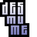
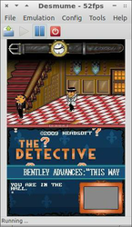
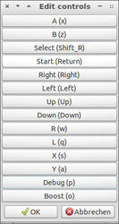

DeSmuME
Dieser Artikel wurde für die folgenden Ubuntu-Versionen getestet:
Ubuntu 16.04 Xenial Xerus
Ubuntu 14.04 Trusty Tahr
Zum Verständnis dieses Artikels sind folgende Seiten hilfreich:

DeSmuME  (ehemals YopYop DS) ist ein Emulator, um Homebrew-Anwendungen, welche für den Nintendo DS(i) geschrieben wurden, unter Ubuntu laufen zu lassen. Die FPS-Limitierung erlaubt das Spielen auch auf schnellen Systemen.
(ehemals YopYop DS) ist ein Emulator, um Homebrew-Anwendungen, welche für den Nintendo DS(i) geschrieben wurden, unter Ubuntu laufen zu lassen. Die FPS-Limitierung erlaubt das Spielen auch auf schnellen Systemen.
|  |  |
| DeSmuME | Steuerung |
Installation¶
Folgendes Paket muss installiert [1] werden:
desmume (universe )
 mit apturl
mit apturl
Paketliste zum Kopieren:
sudo apt-get install desmume
sudo aptitude install desmume
Nach erfolgreicher Installation ist das Programm unter "Anwendungen -> Spiele -> DeSmuME" zu finden. Hier stehen zwei Ports mit GUI zur Auswahl (GTK+ / Glade). Diese besitzen einen unterschiedlichen Funktionsumfang.
Bedienung¶
Zuerst benötigt man ein ROM mit der Endung .nds, welche man aus dem Internet herunterladen kann. Dieses muß ggf. noch aus einem Archiv entpackt [3] werden. Der Liste der unterstützten Spiele kann man entnehmen, welche Titel unterstützt werden.
ROMs¶
Über "File -> Open" können ROMs geladen werden - alternativ steht Strg + O zur Verfügung. Um das ROM zu starten im Menüpunkt "Emulation" je nach Version "Run" oder "Execute" wählen.
Sicherung¶
Über den Menüpunkt "Saves können Spielstände gespeichert ("Save State") oder geladen ("Load State") werden. Diese Option steht lediglich in der Version Glade zur Verfügung.
Einstellungen¶
Steuerung¶
Um die Tastaturbelegung zu verändern, ruft man unter "Config -> Edit Controls" / "Config -> Keyboard Controls" den entsprechenden Punkt auf und passt die Grundeinstellungen den eigenen Bedürfnissen an.
Steuerung¶
| Steuerung | |||||
| Taste | DS | Taste | DS | Taste | DS |
| Z | A | X | B | A | Y |
| S | X | Q | L | W | R |
| ⏎ | START | SELECT | Maus | TOUCHSCREEN | |
| ↑ | auf | ↓ | ab | ← | links |
| → | rechts | ||||


- Erstellt mit Inyoka
-
 2004 – 2017 ubuntuusers.de • Einige Rechte vorbehalten
2004 – 2017 ubuntuusers.de • Einige Rechte vorbehalten
Lizenz • Kontakt • Datenschutz • Impressum • Serverstatus -
Serverhousing gespendet von